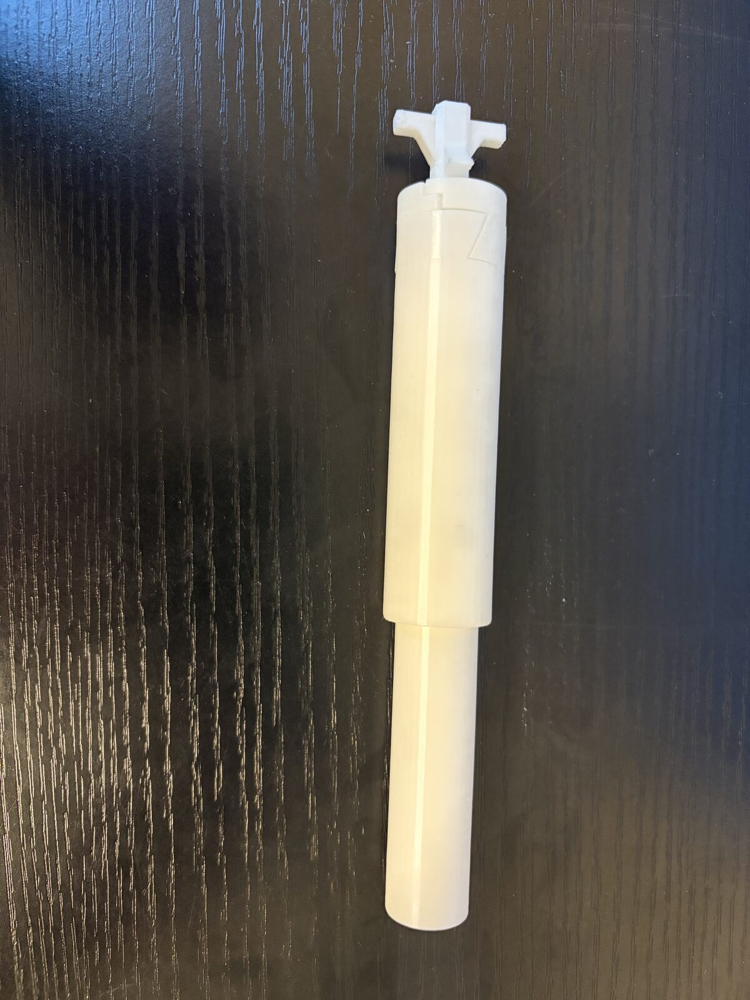
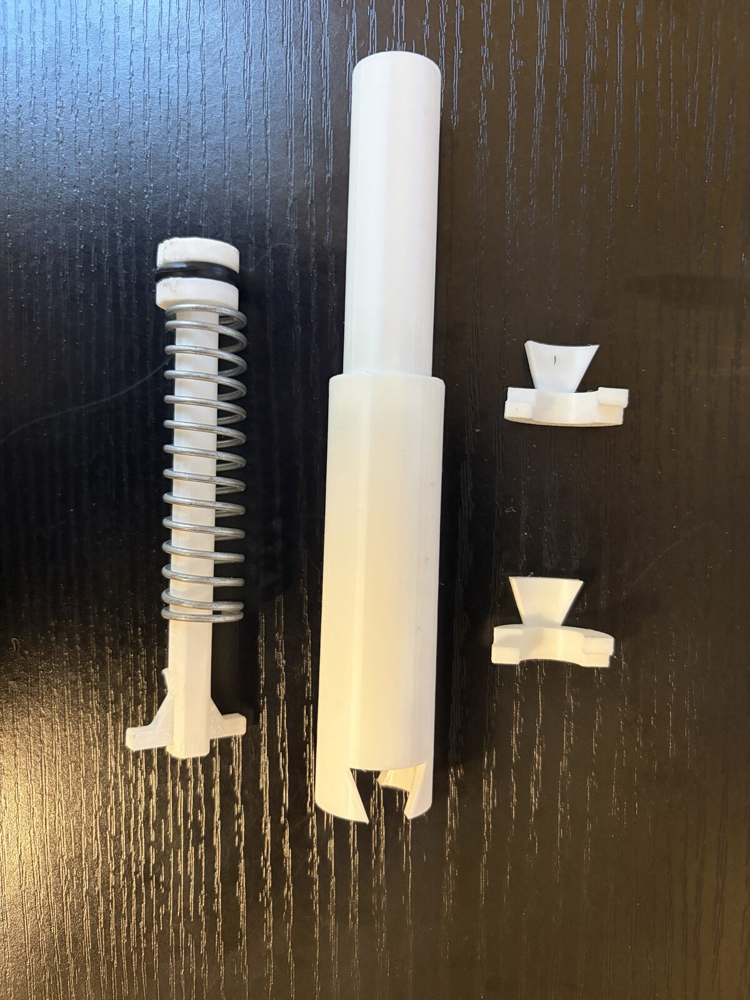
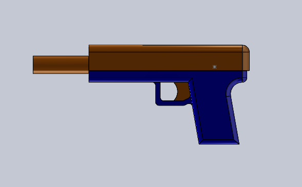

A fully custom spring-piston pneumatic foam dart blaster, designed from scratch in CAD and currently being prototyped and tested piece by piece.
This is a personal project I'm currently working on: a fully custom, spring-piston pneumatic foam dart blaster designed from the ground up in SolidWorks — no kits, no existing blaster internals, just a grip frame and air system built from scratch.
The mechanism works like a small pneumatic pump: pulling back the plunger tube compresses a spring against a sealed air chamber, and releasing it drives the plunger forward to push a burst of air (and a dart) out through the barrel. I've been 3D printing and iterating on the plunger tube, o-ring seal, and spring mount to get a tight, low-friction fit that can survive repeated cycling without cracking or leaking air. Also beginning work on a slide and trigger system.
Right now I'm at the prototyping stage: the air chamber and plunger assembly have been printed and test-fit (cycled by hand instead of with a mechanism), and I've begun development of a reliable slide and trigger system. CAD for the full outer pistol-style housing is finished and ready to print but might change as internal mechanisms develop (mounting of mechanisms still needed).
Designing a plunger and air-chamber seal that builds up enough pressure to fire reliably, without leaking air or binding as it cycles.
Modeled the full blaster and internal spring-piston mechanism in SolidWorks, then 3D printed and hand-tested the plunger tube, spring, and seal components to refine the fit.
Air chamber and plunger prototypes are done; slide and trigger are in development.


